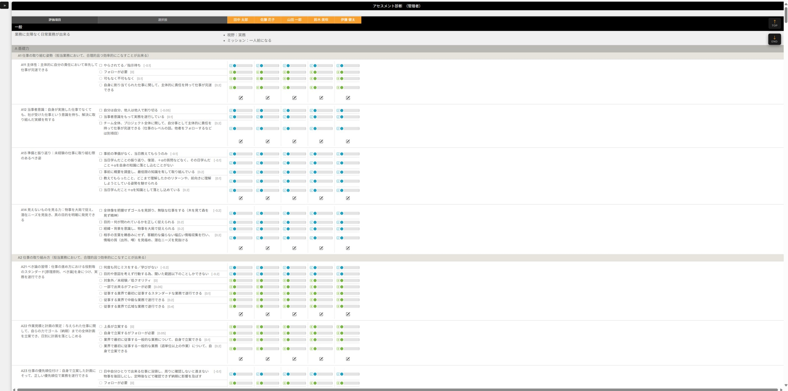
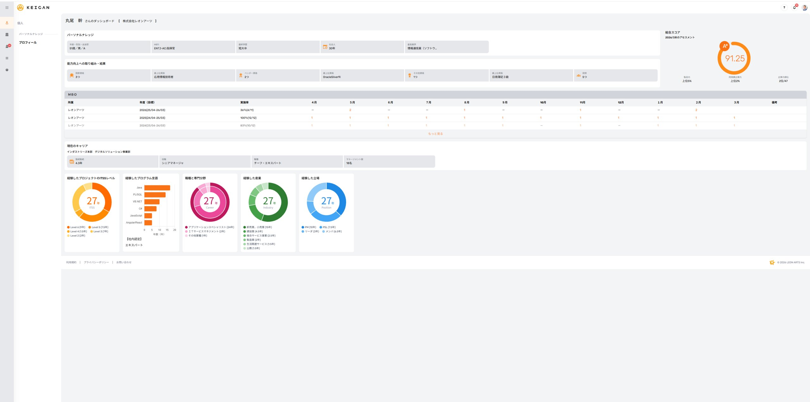
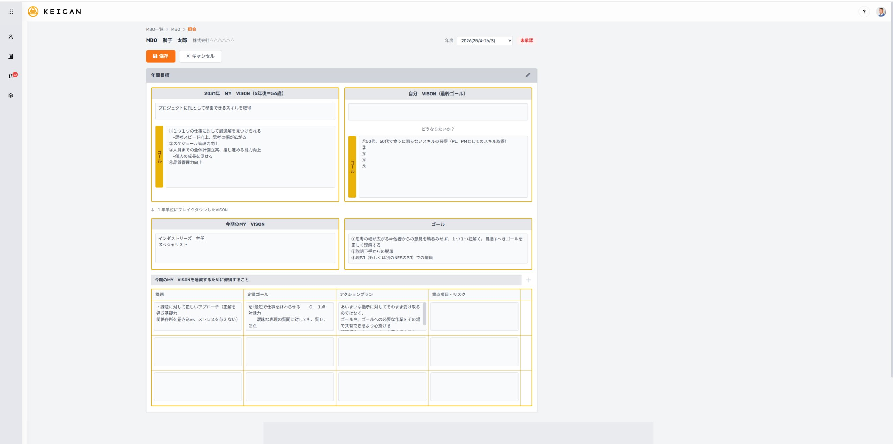

TOP › KEIGAN for IT BUSINESSES
登録後2か月間 無料でお試し
KEIGAN for IT BUSINESSES
属人的な評価から、
公平な評価へ。
KEIGAN for IT BUSINESSESは、IT企業の人事評価に特化したSaaSです。800項目超の精緻な評価基準と、職務経歴からのITSSレベル自動算定で、評価基準づくりの手間をゼロに。誰が評価してもブレない、納得感のある人事考課を月額1,000円/IDから実現します。


